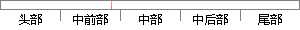

（1）文献中发现使用ReLU函数得到的批量梯度下降的收敛速度会比Tanh函数和Sigmoid函数快很多。
片段位置图

相似结果|
1
原句片段：（1）文献中发现使用ReLU函数得到的批量梯度下降的收敛速度会比Tanh函数和Sigmoid函数快很多。
相似片段 1：1 RELU 取代 sigmoid 和 tanh 函数的原因是在求解梯度下降时 RELU 的速度更快...发现使用 ReLU 得到的 SGD 的收敛速度会比 sigmoid/tanh 快很 多(看右图)。...
相似片段 2：存在梯度饱和的问题(问题一),从公式上我们可以看出tanh函数就是sigmod函数的一个...优点1:发现使用 ReLU 得到的SGD(随机梯度下降法)的收敛速度会比 sigmoid/tanh ...
|
※ 片段修改建议 ※
近似词参考：- 发现：发明
- 使用：利用
- 得到：获得
- 下降：降落 下落 降低
- 速度：速率
- 很多：良多 许多 不少 得多
系统自动生成语句：（1）文献中发明利用ReLU函数获得的批量梯度降落的收敛速率会比Tanh函数和Sigmoid函数快良多。
注：本片段修改建议为系统自动生成，仅供参考。